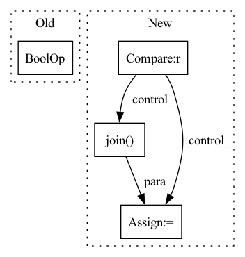

Pattern ID :23343
Before Change
start = 0
for i, label in enumerate(token_label[1 : input_len + 1]):
label_name = label_list[label]
if label_name == "O" or label_name.startswith("B-") :
if len(words):
items.append({"pos": [start, i], "entity": words, "label": tag})
if label_name.startswith("B-"):After Change
items = []
input_data = input_datas[batch]
for i, label in enumerate(token_label):
if (label_list[label] == "O" or "B-" in label_list[label]) and start >= 0 :
entity = input_data[start : i - 1]
if isinstance(entity, list):
entity = "".join( entity)
items.append(
{
"pos": [start, i - 2],
"entity": entity,In pattern: SUPERPATTERN
Frequency: 3
Non-data size: 4
Instances Fragment ID: 73485505
Project Name: paddlepaddle/paddlenlp
Commit Name: 47fe71d98378e46e691d4fde7b1ba8ecb144afa4
Time: 2023-01-05
Author: fangzeyang0904@hotmail.com
File Name: model_zoo/ernie-3.0/deploy/simple_serving/server_token_cls.py
M Class Name: NERPostHandler
N Class Name: NERPostHandler
M Method Name: process(3)
N Method Name: process(3)
M Parent Class: BasePostHandler
N Parent Class: BasePostHandler
M File Name: model_zoo/ernie-3.0/deploy/simple_serving/server_token_cls.py
N File Name: model_zoo/ernie-3.0/deploy/simple_serving/server_token_cls.py
M Start Line: 26
M End Line: 54
N Start Line: 26
N End Line: 58
Before Change
"set the dataloader with .set_loaders(...)"
)
dataset_size = getattr(self, "dali_epoch_size", None) or len(dataloader.dataset)
dataset_size = self.trainer.limit_train_batches * dataset_size
num_devices = 1After Change
if self._num_training_steps is None:
try:
dataset = self.extra_args.get("dataset", None)
if dataset not in ["cifar10", "cifar100", "stl10"] :
folder = os.path.join( self.extra_args["data_dir"], self.extra_args["train_dir"])
else:
folder = None
no_labels = self.extra_args.get("no_labels", False)
data_fraction = self.extra_args.get("data_fraction", -1.0) Fragment ID: 73485509
Project Name: vturrisi/contrastive-learning
Commit Name: eb07a9c7c2872efb1ae83767f59a67fa616a7652
Time: 2022-05-02
Author: vt.turrisi@gmail.com
File Name: solo/methods/linear.py
M Class Name: LinearModel
N Class Name: LinearModel
M Method Name: num_training_steps(1)
N Method Name: num_training_steps(1)
M Parent Class: pl.LightningModule
N Parent Class: pl.LightningModule
M File Name: solo/methods/linear.py
N File Name: solo/methods/linear.py
M Start Line: 199
M End Line: 208
N Start Line: 184
N End Line: 206
Before Change
"set the dataloader with .set_loaders(...)"
)
dataset_size = getattr(self, "dali_epoch_size", None) or len(dataloader.dataset)
dataset_size = self.trainer.limit_train_batches * dataset_size
num_devices = 1After Change
if self._num_training_steps is None:
try:
dataset = self.extra_args.get("dataset", None)
if dataset not in ["cifar10", "cifar100", "stl10"] :
folder = os.path.join( self.extra_args["data_dir"], self.extra_args["train_dir"])
else:
folder = None
no_labels = self.extra_args.get("no_labels", False)
data_fraction = self.extra_args.get("data_fraction", -1.0) Fragment ID: 73485508
Project Name: vturrisi/contrastive-learning
Commit Name: eb07a9c7c2872efb1ae83767f59a67fa616a7652
Time: 2022-05-02
Author: vt.turrisi@gmail.com
File Name: solo/methods/base.py
M Class Name: BaseMethod
N Class Name: BaseMethod
M Method Name: num_training_steps(1)
N Method Name: num_training_steps(1)
M Parent Class: pl.LightningModule
N Parent Class: pl.LightningModule
M File Name: solo/methods/base.py
N File Name: solo/methods/base.py
M Start Line: 383
M End Line: 392
N Start Line: 362
N End Line: 384